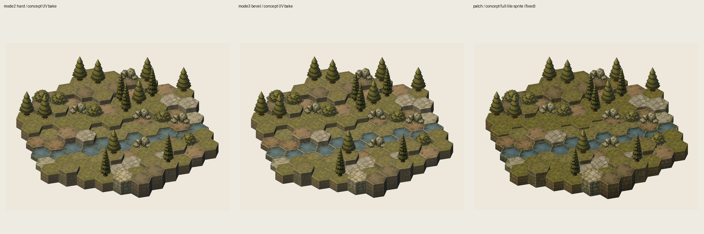

总览：当前三条管线输出
这张图使用最新修复后的面片场景截图合成，第三列不再是旧的层级错误图。

共享输入：AI raw tile 与 decor


从 raw 到 tscn 的分叉点
texture-gen 裸模式生图
base image 是几何模板，reference 是 `docs/concept.jpg`。输出先落在 `%APPDATA%\InkMon\Lab\texture-gen\calls\...`，再导出到 repo。
入 repo 缓冲
`concept素材-v1/raw/*_design_raw.png` 是三条管线共同起点；decor 在 `decor_raw/`。
UV 或 fit
硬边生成 standard paper-net UV；倒角生成 explicit bevel UV；面片不生成 UV，只做 alpha cleanup + fit compose。
Blender 或跳过
硬边/倒角会在 Blender 里把 UV 贴到模型再 render 成 PNG；面片直接把 full 3D tile 当 sprite。
asset_scene.tscn
三个场景都用 `art_tile_map_base.gd`，只换 `baked_dir`。最终由 manifest 的 anchor/size 驱动地图拼装。
texture-gen 本地生图台账
下面来自 `%APPDATA%\InkMon\Lab\texture-gen\calls\*/call.json`。`water_e1` 的 raw 图存在于 repo，但本机未找到对应 `call.json`，所以不伪造参数。
| asset | callId / status | quality / size | base image | reference |
|---|---|---|---|---|
| grass_e0 | call_mqkxdo3j_ok4gg | low / 1024x1024 | blender/templates/standard-templates/template_design_e0.png | docs/concept.jpg |
| grass_e1 | call_mqkxfl5q_edyrx | low / 1024x1024 | template_design_e1.png | docs/concept.jpg |
| grass_e2 | call_mqkxghyt_pe5lz | low / 1024x1024 | template_design_e2.png | docs/concept.jpg |
| dirt_e0 | call_mqkxhpmo_046hh | low / 1024x1024 | template_design_e0.png | docs/concept.jpg |
| dirt_e1 | call_mqkxmf6m_yxi62 | low / 1024x1024 | template_design_e1.png | docs/concept.jpg |
| dirt_e2 | call_mqkxnh76_r7gpf | low / 1024x1024 | template_design_e2.png | docs/concept.jpg |
| stone_e0 | call_mqkxjsqd_77hhx | low / 1024x1024 | template_design_e0.png | docs/concept.jpg |
| stone_e1 | call_mqkxom0i_60fng | low / 1024x1024 | template_design_e1.png | docs/concept.jpg |
| stone_e2 | call_mqkxpj62_ttq8z | low / 1024x1024 | template_design_e2.png | docs/concept.jpg |
| water_e0 | call_mqkxkslc_ne5rx | low / 1024x1024 | template_design_e0.png | docs/concept.jpg |
| water_e1 | raw present; local call.json not found | unknown | template_design_e1.png inferred | docs/concept.jpg inferred from history |
| water_e2 | call_mqkxrncc_2728b | low / 1024x1024 | template_design_e2.png | docs/concept.jpg |
| decor_pine | call_mqkz2spo_dm5bm | low / 1024x1024 | decor_templates/decor_pine_template.png | docs/concept.jpg |
| decor_pine_tall | call_mqkz3wap_ihzqr | low / 1024x1024 | decor_templates/decor_pine_tall_template.png | docs/concept.jpg |
| decor_bush | call_mqkz59l7_clxpy | low / 1024x1024 | decor_templates/decor_bush_template.png | docs/concept.jpg |
| decor_rocks | call_mqkz67tw_i8jjh | low / 1024x1024 | decor_templates/decor_rocks_template.png | docs/concept.jpg |
代表性 terrain prompt：grass_e0
Create exactly ONE isometric hex terrain tile, not a contact sheet, not a map, not multiple variants.
The base image is a strict geometry template. Follow it exactly:
- Keep the same tile position, scale, silhouette, camera angle, pitch, yaw, top hex polygon, and visible side-wall geometry as the template.
- Do not rotate, resize, crop, move, or redraw the tile into a different perspective.
- Generate only one complete tile that fills the template shape.
- Keep pure white background outside the tile.
Theme: concept-style grass_e0 base tile for a tactical hex map. Top surface: muted dark olive grass, worn moss, small flat weeds, tiny pebbles, subtle dirt patches, high-detail hand-painted texture. Side walls: stacked mossy stone/earth blocks like the concept reference, thick and structural, but cleanly aligned to the template.
Style anchor: use docs/concept.jpg only for the painterly tactical RPG look: dark olive palette, crisp stone block detail, warm black-brown ink, heavy readable volume, natural worn edges. Do not copy creatures, trees, ruins, bridges, or map layout from the reference.
Lighting and shadows:
- pure white background
- no cast shadow
- no drop shadow
- no ambient floor shadow
- material/albedo detail only; Blender/Godot will add final lighting and map composition.
Edge requirement: visible but clean outer silhouette and top rim; no doubled seam lines, no thick black internal hinge lines, no white gaps.代表性 decor prompt：decor_pine
Create a single centered hand-painted isometric pine tree game prop matching the style of docs/concept.jpg: dark olive foliage, warm black-brown ink linework, painterly fantasy tactics map asset. Pure white background, no cast shadow, no drop shadow, no ground tile, no text, one isolated object only, readable at small 2D sprite size.共享 Godot 装配契约
scene
`asset_scene.tscn` 只是一层配置：`render_mode=PATCH`，`baked_dir=...`，脚本统一走 `art_tile_map_base.gd`。
manifest
每条管线的 `manifest.json` 定义 `anchor_px=[256,256]`、`size_px=[512,512]`、terrain/elevation asset key。Godot 拼图只信 manifest。